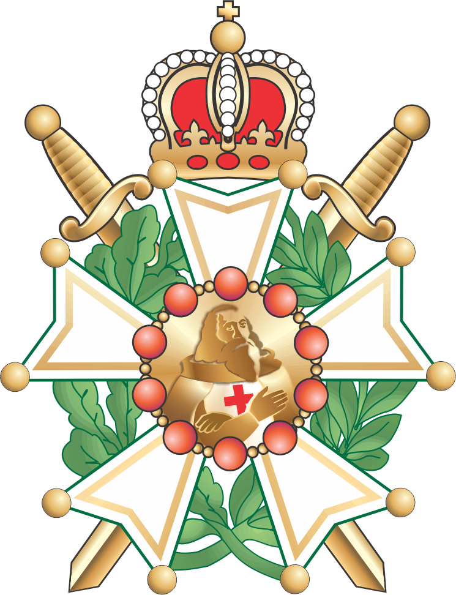

Priorado de Nobres Cavaleiros
O Priorado de Nobres Cavaleiros atua como complemento à Ordem DeMolay, reunindo jovens mais experientes a partir dos 16 anos para um estudo mais profundo e cerimonial.
Por enquanto, o estado do Amazonas conta com somente um priorado, o "Guardiões da Amazônia nº 141", localizado na cidade de Manaus e fundado em 2008.